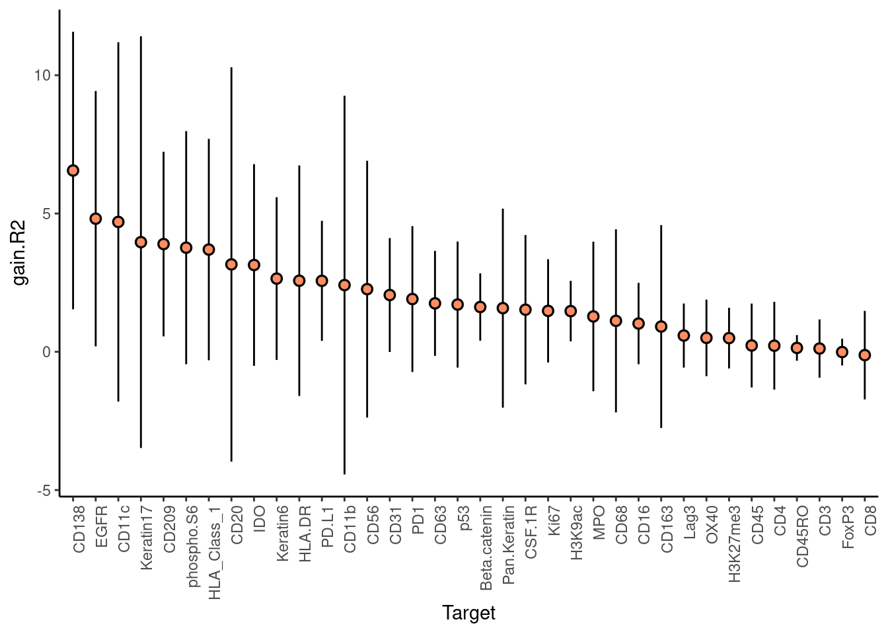
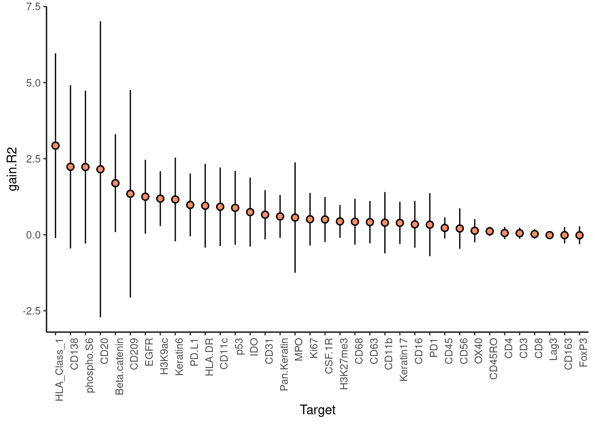
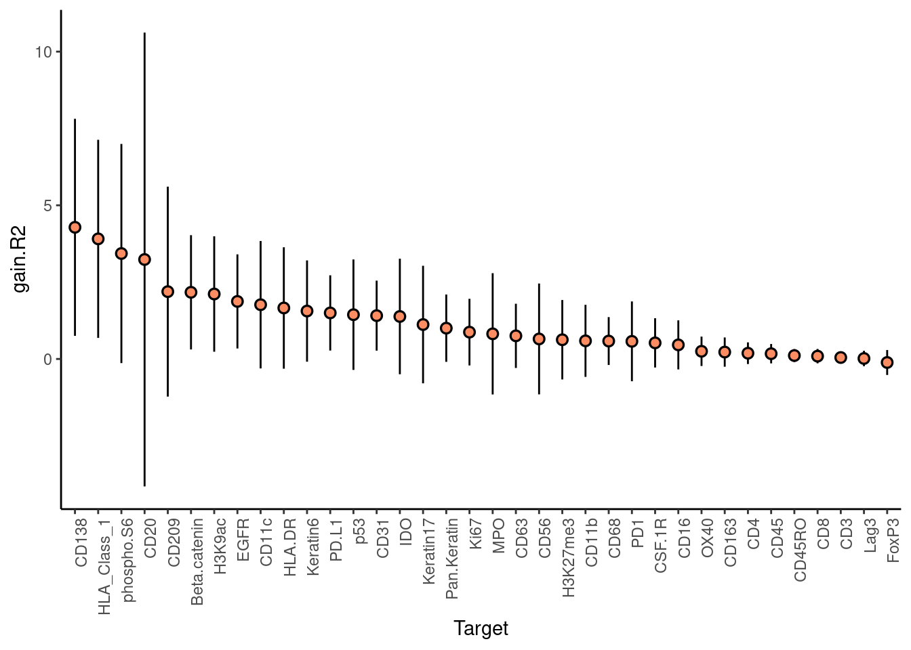
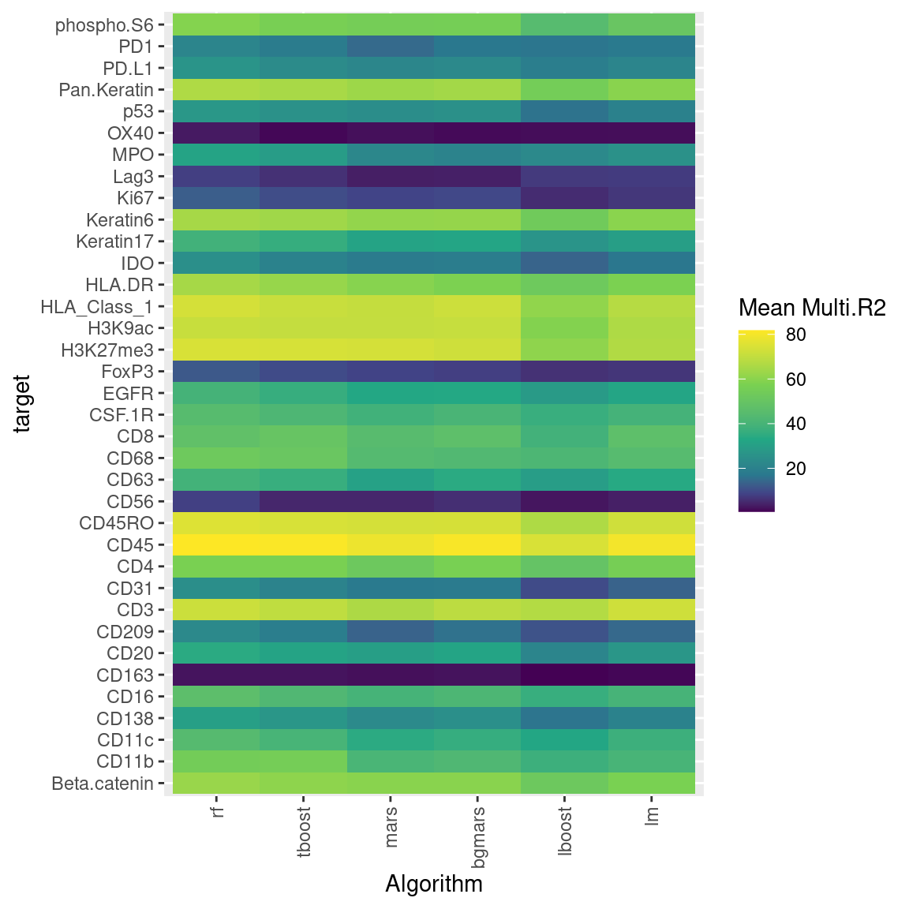
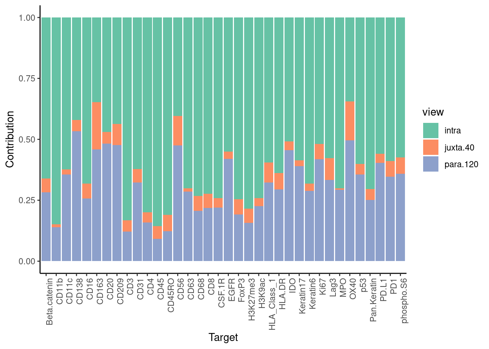

Model Comparison
Last updated: 2021-10-26
Checks: 6 1
Knit directory: mibi_analysis/
This reproducible R Markdown analysis was created with workflowr (version 1.6.2). The Checks tab describes the reproducibility checks that were applied when the results were created. The Past versions tab lists the development history.
Great! Since the R Markdown file has been committed to the Git repository, you know the exact version of the code that produced these results.
Great job! The global environment was empty. Objects defined in the global environment can affect the analysis in your R Markdown file in unknown ways. For reproduciblity it’s best to always run the code in an empty environment.
The command set.seed(20211011) was run prior to running the code in the R Markdown file. Setting a seed ensures that any results that rely on randomness, e.g. subsampling or permutations, are reproducible.
Great job! Recording the operating system, R version, and package versions is critical for reproducibility.
Nice! There were no cached chunks for this analysis, so you can be confident that you successfully produced the results during this run.
Using absolute paths to the files within your workflowr project makes it difficult for you and others to run your code on a different machine. Change the absolute path(s) below to the suggested relative path(s) to make your code more reproducible.
| absolute | relative |
|---|---|
| ~/Saez/workflowr_projects/mibi_analysis/ | . |
Great! You are using Git for version control. Tracking code development and connecting the code version to the results is critical for reproducibility.
The results in this page were generated with repository version d097ba8. See the Past versions tab to see a history of the changes made to the R Markdown and HTML files.
Note that you need to be careful to ensure that all relevant files for the analysis have been committed to Git prior to generating the results (you can use wflow_publish or wflow_git_commit). workflowr only checks the R Markdown file, but you know if there are other scripts or data files that it depends on. Below is the status of the Git repository when the results were generated:
Ignored files:
Ignored: analysis/cell.specific.results/immune.immune_s1/
Ignored: analysis/cell.specific.results/immune.immune_s10/
Ignored: analysis/cell.specific.results/immune.immune_s11/
Ignored: analysis/cell.specific.results/immune.immune_s12/
Ignored: analysis/cell.specific.results/immune.immune_s13/
Ignored: analysis/cell.specific.results/immune.immune_s14/
Ignored: analysis/cell.specific.results/immune.immune_s15/
Ignored: analysis/cell.specific.results/immune.immune_s16/
Ignored: analysis/cell.specific.results/immune.immune_s17/
Ignored: analysis/cell.specific.results/immune.immune_s18/
Ignored: analysis/cell.specific.results/immune.immune_s19/
Ignored: analysis/cell.specific.results/immune.immune_s2/
Ignored: analysis/cell.specific.results/immune.immune_s20/
Ignored: analysis/cell.specific.results/immune.immune_s21/
Ignored: analysis/cell.specific.results/immune.immune_s22/
Ignored: analysis/cell.specific.results/immune.immune_s23/
Ignored: analysis/cell.specific.results/immune.immune_s24/
Ignored: analysis/cell.specific.results/immune.immune_s25/
Ignored: analysis/cell.specific.results/immune.immune_s26/
Ignored: analysis/cell.specific.results/immune.immune_s27/
Ignored: analysis/cell.specific.results/immune.immune_s28/
Ignored: analysis/cell.specific.results/immune.immune_s29/
Ignored: analysis/cell.specific.results/immune.immune_s3/
Ignored: analysis/cell.specific.results/immune.immune_s31/
Ignored: analysis/cell.specific.results/immune.immune_s32/
Ignored: analysis/cell.specific.results/immune.immune_s33/
Ignored: analysis/cell.specific.results/immune.immune_s34/
Ignored: analysis/cell.specific.results/immune.immune_s35/
Ignored: analysis/cell.specific.results/immune.immune_s36/
Ignored: analysis/cell.specific.results/immune.immune_s37/
Ignored: analysis/cell.specific.results/immune.immune_s38/
Ignored: analysis/cell.specific.results/immune.immune_s39/
Ignored: analysis/cell.specific.results/immune.immune_s4/
Ignored: analysis/cell.specific.results/immune.immune_s40/
Ignored: analysis/cell.specific.results/immune.immune_s41/
Ignored: analysis/cell.specific.results/immune.immune_s5/
Ignored: analysis/cell.specific.results/immune.immune_s6/
Ignored: analysis/cell.specific.results/immune.immune_s7/
Ignored: analysis/cell.specific.results/immune.immune_s8/
Ignored: analysis/cell.specific.results/immune.immune_s9/
Ignored: analysis/composition.analysis/
Ignored: analysis/notumor.composition.analysis/
Ignored: analysis/red.composition.analysis/
Ignored: analysis/results/
Ignored: analysis/test/
Ignored: data/cancer.immune.results.RDS
Ignored: data/cancer.immune.views.RDS
Ignored: data/cellData.csv
Ignored: data/coord.RDS
Ignored: data/coordinates.csv
Ignored: data/earth.results.RDS
Ignored: data/expression.RDS
Ignored: data/expression_per_sample.RDS
Ignored: data/graph.clusters.RDS
Ignored: data/immune.immune.results.RDS
Ignored: data/immune.immune.views.RDS
Ignored: data/lmbag.results.RDS
Ignored: data/meta_data.RDS
Ignored: data/misty_views_smp.RDS
Ignored: data/patient_class.csv
Ignored: data/ranger.results.RDS
Ignored: data/raw_tiffs/
Ignored: data/sample_meta.RDS
Ignored: data/tumor.immune.contacts.RDS
Ignored: old_files/
Note that any generated files, e.g. HTML, png, CSS, etc., are not included in this status report because it is ok for generated content to have uncommitted changes.
These are the previous versions of the repository in which changes were made to the R Markdown (analysis/Model_Comparison.Rmd) and HTML (docs/Model_Comparison.html) files. If you’ve configured a remote Git repository (see ?wflow_git_remote), click on the hyperlinks in the table below to view the files as they were in that past version.
| File | Version | Author | Date | Message |
|---|---|---|---|---|
| html | d06675c | schae211 | 2021-10-26 | Build site. |
| html | 4dd0190 | schae211 | 2021-10-25 | Build site. |
| html | b858544 | schae211 | 2021-10-25 | Build site. |
| html | 6ac65aa | schae211 | 2021-10-23 | Build site. |
| Rmd | 7a5242c | schae211 | 2021-10-23 | added neighborhood composition analysis |
| html | b9bdcf8 | schae211 | 2021-10-22 | Build site. |
| html | 6515710 | schae211 | 2021-10-22 | Build site. |
| Rmd | 5927843 | schae211 | 2021-10-22 | hiding code |
| html | 4df87c6 | schae211 | 2021-10-22 | Build site. |
| html | 8cb127d | schae211 | 2021-10-21 | Build site. |
| html | b575d1a | schae211 | 2021-10-21 | Build site. |
| html | d93e752 | schae211 | 2021-10-20 | Build site. |
| html | ef76a7d | schae211 | 2021-10-20 | Build site. |
| html | 35c3b36 | schae211 | 2021-10-20 | Build site. |
| html | 42bc887 | schae211 | 2021-10-20 | Build site. |
| Rmd | c73137c | schae211 | 2021-10-20 | immune-immune analysis included |
| html | 74c1c9a | schae211 | 2021-10-19 | Build site. |
| html | 2debe86 | schae211 | 2021-10-19 | model comparison |
| Rmd | 667692d | schae211 | 2021-10-19 | created file for comparing different models |
Set up
knitr::opts_chunk$set(echo = TRUE)
knitr::opts_knit$set(root.dir = "~/Saez/workflowr_projects/mibi_analysis/")Loaded packages.
suppressPackageStartupMessages(library(mistyR))
suppressPackageStartupMessages(library(future))
suppressPackageStartupMessages(library(tidyverse))
suppressPackageStartupMessages(library(factoextra))
plan("multisession", workers=14)Loading data generated in MIBI_Analysis.Rmd
meta <- readRDS("data/meta_data.RDS")
all.expr <- readRDS("data/expression.RDS")
meta.smp <- readRDS("data/sample_meta.RDS")
misty.views.smp <- readRDS("data/misty_views_smp.RDS")Introduction
To extend the functionality of MISTy a new API was implemented to model the different views which are ultimatively combined in a linear meta model. This analysis is supposed to test how these new models work on real-world datasets.
Running MISTy
The MISTy views were generated with the following parameters:
- Intraview: Default
- Juxtaview: l = 40
- Paraview: l = 120, zoi = 40
Random Forest
if ("ranger.results.RDS" %in% list.files("data")) {
ranger.results <- readRDS("data/ranger.results.RDS")
} else {
cv.folds = 10
ranger.results.folders <- map2(
misty.views.smp, names(misty.views.smp), function(smp, name) {
smp %>% run_misty(results.folder = paste0("analysis/results/ranger_", name),
cv.folds = cv.folds)
})
ranger.results <- collect_results(ranger.results.folders)
saveRDS(ranger.results, "data/ranger.results.RDS")
}mistyR::plot_improvement_stats(ranger.results)
| Version | Author | Date |
|---|---|---|
| 2debe86 | schae211 | 2021-10-19 |
MARS (Multivariante Adaptive Regression Splines)
Running with MARS as ML algorithm to build the view-specific models.
if ("earth.results.RDS" %in% list.files("data")) {
earth.results <- readRDS("data/earth.results.RDS")
} else {
cv.folds = 10
earth.results.folders <- map2(
misty.views.smp, names(misty.views.smp), function(smp, name) {
smp %>% run_misty(results.folder = paste0("analysis/results/earth_", name),
cv.folds = cv.folds, method = "bag", learner = "earth",
n.learners = 100)
})
earth.results <- collect_results(earth.results.folders)
saveRDS(earth.results, "data/earth.results.RDS")
}mistyR::plot_improvement_stats(earth.results)
| Version | Author | Date |
|---|---|---|
| 2debe86 | schae211 | 2021-10-19 |
Linear Bagged Model
plan("multisession", workers = 8)
if ("lmbag.results.RDS" %in% list.files("data")) {
lmbag.results <- readRDS("data/lmbag.results.RDS")
} else {
cv.folds = 10
lmbag.results.folders <- map2(
misty.views.smp, names(misty.views.smp), function(smp, name) {
smp %>% run_misty(results.folder = paste0("analysis/results/lmbag_", name),
cv.folds = cv.folds, method = "bag", learner = "lm",
n.learners = 200)
})
lmbag.results <- collect_results(lmbag.results.folders)
saveRDS(lmbag.results, "data/lmbag.results.RDS")
}mistyR::plot_improvement_stats(lmbag.results)
Comparing the results
Improvements
colors <- c("earth" = "forestgreen", "ranger" = "blue1", "lm" = "red4")
all.improvements <- rbind(
ranger.results$improvements %>% mutate(method = "ranger"),
earth.results$improvements %>% mutate(method = "earth"),
lmbag.results$improvements %>% mutate(method = "lm")
)
all.improvements %>%
filter(measure %in% c("gain.R2", "multi.R2", "intra.R2")) %>%
mutate(measure = factor(measure,
levels = c("gain.R2", "multi.R2", "intra.R2"))) %>%
ggplot() +
geom_boxplot(aes(x=target, y=value, col = method)) +
facet_wrap(~ measure, ncol = 1, scales = "free") +
theme(axis.text.x = ggplot2::element_text(angle = 90, hjust = 1),
plot.title = element_text(hjust = 0.5),
axis.text.x.bottom = element_text(vjust = 0.4)) +
scale_colour_manual(values = colors)
View Contributions
Random Forest (ranger):
mistyR::plot_view_contributions(ranger.results)
Boxplot to look at the variability
ranger.results$contributions %>%
filter(!str_starts(view, "p\\."), view != "intercept") %>%
ggplot() +
geom_boxplot(aes(x = target, y = value)) +
theme(axis.text.x = element_text(angle = 90, hjust = 1)) +
facet_wrap(~ view, ncol = 1)
Bagged MARS (earth):
mistyR::plot_view_contributions(earth.results)
Boxplot to look at the variability
earth.results$contributions %>%
filter(!str_starts(view, "p\\."), view != "intercept") %>%
ggplot() +
geom_boxplot(aes(x = target, y = value)) +
theme(axis.text.x = element_text(angle = 90, hjust = 1)) +
facet_wrap(~ view, ncol = 1)
Bagged Linear Model
mistyR::plot_view_contributions(lmbag.results)
| Version | Author | Date |
|---|---|---|
| 42bc887 | schae211 | 2021-10-20 |
Boxplot to look at the variability
lmbag.results$contributions %>%
filter(!str_starts(view, "p\\."), view != "intercept") %>%
ggplot() +
geom_boxplot(aes(x = target, y = value)) +
theme(axis.text.x = element_text(angle = 90, hjust = 1)) +
facet_wrap(~ view, ncol = 1)
| Version | Author | Date |
|---|---|---|
| 42bc887 | schae211 | 2021-10-20 |
Importances
Random Forest
mistyR::plot_interaction_heatmap(ranger.results, view = "intra", clean = TRUE)
| Version | Author | Date |
|---|---|---|
| 42bc887 | schae211 | 2021-10-20 |
mistyR::plot_interaction_heatmap(ranger.results, view = "juxta.40", clean = TRUE)
| Version | Author | Date |
|---|---|---|
| 42bc887 | schae211 | 2021-10-20 |
mistyR::plot_interaction_heatmap(ranger.results, view = "para.120", clean = TRUE)
| Version | Author | Date |
|---|---|---|
| 42bc887 | schae211 | 2021-10-20 |
Bagged MARS
mistyR::plot_interaction_heatmap(earth.results, view = "intra", clean = TRUE)
| Version | Author | Date |
|---|---|---|
| 42bc887 | schae211 | 2021-10-20 |
mistyR::plot_interaction_heatmap(earth.results, view = "juxta.40", clean = TRUE)
| Version | Author | Date |
|---|---|---|
| 42bc887 | schae211 | 2021-10-20 |
mistyR::plot_interaction_heatmap(earth.results, view = "para.120", clean = TRUE)
| Version | Author | Date |
|---|---|---|
| 42bc887 | schae211 | 2021-10-20 |
Bagged Linear Model
mistyR::plot_interaction_heatmap(lmbag.results, view = "intra", clean = TRUE)
| Version | Author | Date |
|---|---|---|
| 42bc887 | schae211 | 2021-10-20 |
mistyR::plot_interaction_heatmap(lmbag.results, view = "juxta.40", clean = TRUE)
| Version | Author | Date |
|---|---|---|
| 42bc887 | schae211 | 2021-10-20 |
mistyR::plot_interaction_heatmap(lmbag.results, view = "para.120", clean = TRUE)
| Version | Author | Date |
|---|---|---|
| 42bc887 | schae211 | 2021-10-20 |
sessionInfo()R version 4.1.1 (2021-08-10)
Platform: x86_64-pc-linux-gnu (64-bit)
Running under: Ubuntu 20.04.3 LTS
Matrix products: default
BLAS: /usr/lib/x86_64-linux-gnu/blas/libblas.so.3.9.0
LAPACK: /usr/lib/x86_64-linux-gnu/lapack/liblapack.so.3.9.0
locale:
[1] LC_CTYPE=en_US.UTF-8 LC_NUMERIC=C
[3] LC_TIME=en_US.UTF-8 LC_COLLATE=en_US.UTF-8
[5] LC_MONETARY=en_US.UTF-8 LC_MESSAGES=en_US.UTF-8
[7] LC_PAPER=en_US.UTF-8 LC_NAME=C
[9] LC_ADDRESS=C LC_TELEPHONE=C
[11] LC_MEASUREMENT=en_US.UTF-8 LC_IDENTIFICATION=C
attached base packages:
[1] stats graphics grDevices utils datasets methods base
other attached packages:
[1] factoextra_1.0.7 forcats_0.5.1 stringr_1.4.0 dplyr_1.0.7
[5] purrr_0.3.4 readr_2.0.2 tidyr_1.1.4 tibble_3.1.5
[9] ggplot2_3.3.5 tidyverse_1.3.1 future_1.22.1 mistyR_1.1.13
[13] workflowr_1.6.2
loaded via a namespace (and not attached):
[1] ggrepel_0.9.1 Rcpp_1.0.7 lubridate_1.8.0 listenv_0.8.0
[5] assertthat_0.2.1 rprojroot_2.0.2 digest_0.6.28 utf8_1.2.2
[9] parallelly_1.28.1 cellranger_1.1.0 R6_2.5.1 backports_1.2.1
[13] reprex_2.0.1 evaluate_0.14 httr_1.4.2 highr_0.9
[17] pillar_1.6.3 rlang_0.4.11 readxl_1.3.1 rstudioapi_0.13
[21] whisker_0.4 jquerylib_0.1.4 rmarkdown_2.11 labeling_0.4.2
[25] munsell_0.5.0 broom_0.7.9 compiler_4.1.1 httpuv_1.6.3
[29] modelr_0.1.8 xfun_0.26 pkgconfig_2.0.3 globals_0.14.0
[33] htmltools_0.5.2 tidyselect_1.1.1 codetools_0.2-18 fansi_0.5.0
[37] withr_2.4.2 tzdb_0.1.2 crayon_1.4.1 dbplyr_2.1.1
[41] later_1.3.0 grid_4.1.1 jsonlite_1.7.2 gtable_0.3.0
[45] lifecycle_1.0.1 DBI_1.1.1 git2r_0.28.0 magrittr_2.0.1
[49] scales_1.1.1 cli_3.0.1 stringi_1.7.5 farver_2.1.0
[53] fs_1.5.0 promises_1.2.0.1 xml2_1.3.2 bslib_0.3.1
[57] ellipsis_0.3.2 generics_0.1.0 vctrs_0.3.8 RColorBrewer_1.1-2
[61] tools_4.1.1 glue_1.4.2 hms_1.1.1 parallel_4.1.1
[65] fastmap_1.1.0 yaml_2.2.1 colorspace_2.0-2 rvest_1.0.1
[69] knitr_1.36 haven_2.4.3 sass_0.4.0